Overview:
In this project we learned how to render scenes with different types of lighting and how to create data structures to speed this up. We first implemented intersection methods for basic objects that mostly make up our scene such as triangles and spheres. Next we dealt with one of the main issues when rendering scenes is the amount of time it takes to traverse a scene to find where all the objects/primitives are when trying to find what surfaces are intersected by our sampled rays. To tackle this we implemented a tree style bounding volume hierarchy to speed up scene traversal when trying to find out what objects/primitive intersect. Now when we cast a ray into our scene, we can check whether they intersect with large bounding boxes and only recurse over their sub boxes if an intersection occurred instead of wasting time searching through regions we know the ray can’t access. Then we implemented direct and indirect lighting by sampling rays from our camera’s position, casting them into the scene, and then randomly bouncing them off of the objects they intersect, multiple times, to see if the ray is ever able to reach a light source and thus carry any radiance. Finally we tried to speed up the time to render our scenes by using adaptive sampling which potentially reduces the number of sampled rays we cast out to estimate the value of a pixel.
Part 1
- Walk through the ray generation and primitive intersection parts of the rendering pipeline.
- Explain the triangle intersection algorithm you implemented in your own words.
- To generate a camera ray using the normalized values of (x, y), I found its corresponding camera space direction by doing the following:

I did this because the image space coordinates (x, y) are suppose to be in the same relative location on the image sensor in camera space whose corners are 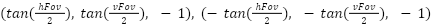.
When x is 0, needs to be on the left edge of the image sensor which would be when and when x is 1 it should be the right edge which is just the negative of the left one. The same logic follows for finding while because that’s the constant z coordinate for the image sensor. With the camera space direction and the camera to world rotation matrix, c2w, I was able to get the corresponding world direction by doing . Finally I can create the ray in world space by setting its origin to be the camera’s origin in world space, , since the ray is supposed to come from the camera’s center, and setting the direction vector to be my calculated . - To find the intersection between a ray and a triangle I simply followed the Möller–Trumbore intersection algorithm discussed in class and discussion which manipulates the linear equation necessary for intersection, 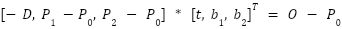. This equation came from the fact that the ray can be represented by the parametric equation and a point within the triangle, , can be represented as by using barycentric coordinates and the vertices of the triangle
 . The Möller–Trumbore intersection algorithm is just the following,
. The Möller–Trumbore intersection algorithm is just the following,
.
Once I solved for , I checked if their values corresponded to an actual point within the triangle by checking that , , , and . I also checked that the value for 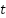 was in a valid range for the corresponding ray,
ray.min_t ray.max_t.
To find the normal vector of the intersection point,  , I used the barycentric coordinates of the intersection point, , and the normals of the triangles vertices, , to make the linear combination 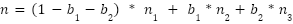.
, I used the barycentric coordinates of the intersection point, , and the normals of the triangles vertices, , to make the linear combination 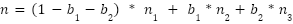. - To find the intersection of the ray and a sphere I followed a similar approach to the triangle intersection but now using the equation a point on a sphere, P, with center, c, and radius, R, must satisfy, . Using the same ray equation discussed previously, we can set both equation equal to each other to set up a quadratic equation in terms of t that looks like the following, .
This means there can be two possible values for which makes sense since the ray can intersect a sphere at possibly two locations. I similarly also check that is non-negative and that at least one of the two possible values for falls within the range of [ray.min_t, ray.max_t]. The normal of the intersection point is just the center of the sphere subtracted from the intersection point and normalized.
- Show images with normal shading for a few small .dae files.
Part 2
- Walk through your BVH construction algorithm. Explain the heuristic you chose for picking the splitting point.
- To construct the BVH of the scene I made a recursive algorithm that first checks if the number of primitives passed in is less than or equal to the max_leaf_size that was specified. If this is true then I create a leaf node in the BVH tree by setting its left and right children pointers to NULL and assigning its start and end variables to the ones passed in. If the clause was false then I first find the average centroid of all the primitives passed in by averaging the centroids of their bounding boxes. For the heuristic I iterate over all the primitives again to count how many are on each side of the average x, y, and z coordinate so I can figure out which axis has a more balanced split of primitives. Using the axis I decided to split on, I create a comparator to sort the iterator of primitives based on their value along the splitting axis then I use binary search to find the primitive to split on. After doing this, I recursively call the BVH construction function using the primitives on the left side of the split and the ones on the right side of the split.
- Show images with normal shading for a few large .dae files that you can only render with BVH acceleration.
- Compare rendering times on a few scenes with moderately complex geometries with and without BVH acceleration. Present your results in a one-paragraph analysis.
The BVH Tree will greatly accelerate the rendering times. Since the BVH tree makes it easier to find possible intersections with primitives because it stores subdivisions of space into a tree structure, it makes it so we don’t have to search the entire set of primitives to find an intersection. We can instead look at a much smaller subset of possible primitives. This will make tracing each ray a lot quicker because we will be able to quickly discard many primitives that are guaranteed not to intersect with the ray. We see this in our results since the average # of intersection tests per ray is a lot smaller and the average # of rays per second is therefore higher.
BVH Tree Comparisons on cow.dae
| Average # of Rays Per Second | Average # of Intersections Per Ray | Clock Time |
With BVH tree Without BVH tree | Average speed 5.3346 million rays per second Average speed 0.1737 million rays per second | Averaged 4.799412 intersection tests per ray Averaged 885.568010 intersection tests per ray | 0.0792s 3.5172s |
BVH Tree Comparisons on beast.dae
| Average # of Rays Per Second | Average # of Intersections Per Ray | Clock Time |
With BVH tree Without BVH tree | Average speed 4.5683 million rays per second Average speed 0.0048 million rays per second | Averaged 5.685313 intersection tests per ray Averaged 18123.750599 intersection tests per ray | 0.0617s 81.1457s |
BVH Tree Comparisons on peter.dae
| Average # of Rays Per Second | Average # of Intersections Per Ray | Clock Time |
With BVH tree Without BVH tree | Average speed 5.0506 million rays per second Average speed 0.0152 million rays per second | Averaged 5.397146 intersection tests per ray Averaged 9059.763167 intersection tests per ray | 0.0370 sec 33.0927s |
Part 3
- Walk through both implementations of the direct lighting function.
- For the hemisphere direct lighting function I sample a direction, , in object space using the hemisphereSampler sampler. Using this new sampled direction, I construct a new ray that is cast out from the current intersection point to see if a light source can be hit. The ray I construct has origin hit_p, the original intersection point, direction ,
and min_t = EPS_F. Next I see if this new ray intersects something in the scene by calling the bvh->intersect function and if it does I add a new term to my Monte Carlo estimate for the irradiance. To make this term I calculate the reflectance,  , by calling isect.bsdf->f() where is the outgoing ray from the intersection to the camera, the cosine of the angle between the normal of the intersection surface and , and the emission of the new surface that is intersected by the new ray (new_isect->bsdf.get_emission()). Then I divide this term by the pdf of the sampler which would just be (1 / pi) because we’re uniformly sampling in a hemisphere. Finally this term is added to my running sum of irradiances which I divide by the total number of samples once I finish creating sample rays.
, by calling isect.bsdf->f() where is the outgoing ray from the intersection to the camera, the cosine of the angle between the normal of the intersection surface and , and the emission of the new surface that is intersected by the new ray (new_isect->bsdf.get_emission()). Then I divide this term by the pdf of the sampler which would just be (1 / pi) because we’re uniformly sampling in a hemisphere. Finally this term is added to my running sum of irradiances which I divide by the total number of samples once I finish creating sample rays. - For the importance direct lighting I loop over all the lights in the scene, scene->lights and for each of these lights I sample ns_area_light samples unless the light is a point light source. I create the sampled direction by calling the sample_L function which samples a point on the given light source and returns a direction , towards it, the distance from the hit point to the light, dist, and the pdf used to sample the direction. Before creating the ray I check whether the cosine of the angle between the intersection’s normal vector and the sampled direction, , is less than 0 as this would mean the direction vector goes through the hit point surface itself so we shouldn’t consider casting this ray. Otherwise I create a new ray with origin hit_p, the original intersection point, direction ,
min_t = EPS_F, and max_t = dist - EPS_F so the new ray doesn’t intersect with the light itself when I cast it. Next I check if this new ray intersects some other object that is not the light source by calling bvh->intersect as this would mean some object is blocking the light source through this direction so the irradiance will be 0. If there's no other intersection I simply create a new term for this ray that will be added to my Monte Carlo Estimator just like in the hemisphere part.
Term = (f * cos_angle * emission) / pdf
where f = isect.bsdf->f(),
cos_angle = ,
emission = curr->sample_L(hit_p, &w_i, &dist, &pdf). After going through all the lights and sampling all the rays I return my Monte Carlo Estimator divided by the number of sample rays I cast.
- Show some images rendered with both implementations of the direct lighting function.
- Hemisphere Direct Lighting
- Importance Direct Lighting

- Focus on one particular scene with at least one area light and compare the noise levels in soft shadows when rendering with 1, 4, 16, and 64 light rays (the -l flag) and with 1 sample per pixel (the -s flag) using light sampling, not uniform hemisphere sampling.
- 1 light ray
- 4 Light Rays
- 16 Light Rays
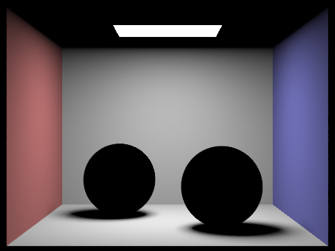
- 64 Light Rays
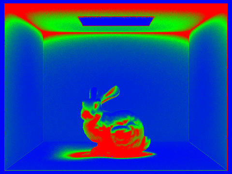
- Compare the results between uniform hemisphere sampling and lighting sampling in a one-paragraph analysis.
- The renders using the uniform hemisphere sampling method appear to have more noise than the importance sampling method which is due to not directly sampling directions towards light sources. By sampling directions randomly, many of the rays won’t point towards a light source and thus result in an emission of 0, even in places in the scene which are definitely receiving light. These non light source rays will then skew our Monte Carlo Estimator to report a dimmer value than we would get with the importance sampling method and thus create randomly dim pixels that look like noise in our final render.
Part 4
- Walk through your implementation of the indirect lighting function.
- For indirect lighting we had to account for light rays bouncing around the scene, up to N times, as it would in real life so using the already sampled ray, r,passed into the function, with direction , and its intersection point, we sampled more rays that would continue on and potentially hit a light source. To create these rays we sampled new directions, , using the sample_f function of the current intersection’s bsdf
(isect.bsdf->sample_f( )). We set the origin of the rays to be hit_p, the intersection point, the direction to be
)). We set the origin of the rays to be hit_p, the intersection point, the direction to be  since is sampled in object space, min_t to be EPS_F, max_t to be INF_D, and the depth to be the depth of the previous ray + 1. After creating the new ray we cast it out to see if it intersects with something else in the scene. If it doesn’t intersect with anything, I just return the result of calling either the hemisphere or importance direct lighting functions through the one_bounce_radiance function using the ray and intersection passed into at_least_one_bounce_radiance. Otherwise I add both the result of the one_bounce_radiance function with a new term consisting of
since is sampled in object space, min_t to be EPS_F, max_t to be INF_D, and the depth to be the depth of the previous ray + 1. After creating the new ray we cast it out to see if it intersects with something else in the scene. If it doesn’t intersect with anything, I just return the result of calling either the hemisphere or importance direct lighting functions through the one_bounce_radiance function using the ray and intersection passed into at_least_one_bounce_radiance. Otherwise I add both the result of the one_bounce_radiance function with a new term consisting of
cos_angle * emission) / pdf
where is the result of calling the sample_f function earlier,
cos_angle = pdf is the pdf used/set in the call to sample_f, and emission = recursively calling at_least_once_bounce_radiance with the new ray I created and the object it intersected.
- Show some images rendered with global (direct and indirect) illumination. Use 1024 samples per pixel.
- Pick one scene and compare rendered views first with only direct illumination, then only indirect illumination. Use 1024 samples per pixel. (You will have to edit PathTracer::at_least_one_bounce_radiance(...) in your code to generate these views.)
- Direct illumination
- Indirect illumination
- For CBbunny.dae, render the mth bounce of light with max_ray_depth set to 0, 1, 2, 3, 4, and 5 (the -m flag), and isAccumBounces=false. Explain in your writeup what you see for the 2nd and 3rd bounce of light, and how it contributes to the quality of the rendered image compared to rasterization. Use 1024 samples per pixel.
The 2nd bounce of light will contribute to the light in the shadows, particularly you can see a big difference in the light towards the rear of the rabbit and also to a lesser degree you can see the difference in the corners of the room. The 3rd bounce of light looks like it contributes a little bit of light to almost every scene in the image. It will generally make each area a little brighter and reduce the contrast of the image (smooth it out).
- max_ray_depth = 0
- max_ray_depth = 1
- max_ray_depth = 2
- max_ray_depth = 3
- max_ray_depth = 4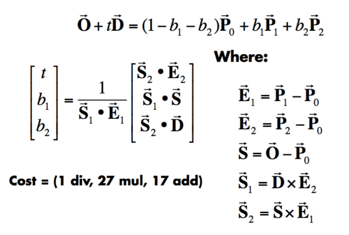
- max_ray_depth = 5
- For CBbunny.dae, compare rendered views with max_ray_depth set to 0, 1, 2, 3, 4, and 5(the -m flag). Use 1024 samples per pixel.
- max_ray_depth = 0
- max_ray_depth = 1
- max_ray_depth = 2
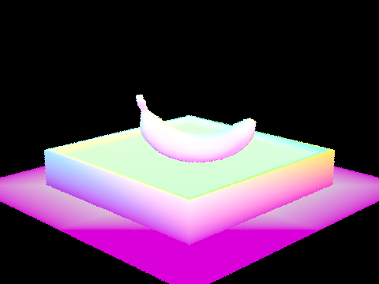
- max_ray_depth = 3
- max_ray_depth = 4
- max_ray_depth = 5

- For CBbunny.dae, output the Russian Roulette rendering with max_ray_depth set to 0, 1, 2, 3, 4, and 100(the -m flag). Use 1024 samples per pixel.
- max_ray_depth = 0
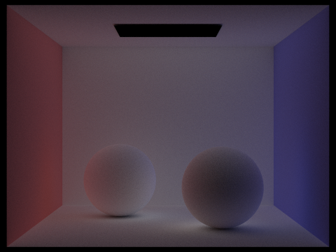
- max_ray_depth = 1
- max_ray_depth = 2
- max_ray_depth = 3
- max_ray_depth = 4
- max_ray_depth = 100
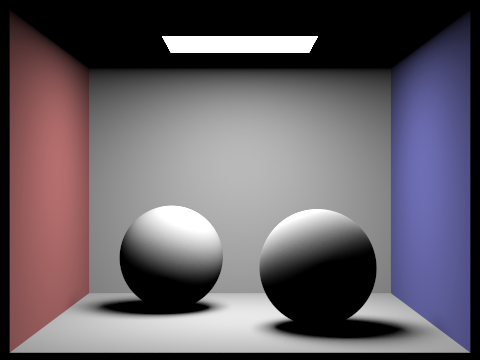
- Pick one scene and compare rendered views with various sample-per-pixel rates, including at least 1, 2, 4, 8, 16, 64, and 1024. Use 4 light rays.
- samples-per-pixel = 1
- samples-per-pixel = 2
- samples-per-pixel = 3
- samples-per-pixel = 8
- samples-per-pixel = 16
- samples-per-pixel = 64
- samples-per-pixel = 1
Part 5
- Explain adaptive sampling. Walk through your implementation of the adaptive sampling.
- Adaptive sampling is a way to reduce the number of samples needed to calculate the value of a pixel as generating samples is expensive. We reduce the number of samples by calculating the standard deviation of the illuminance of the radiance of each of our sampled rays and seeing if it gets below a certain threshold. Basically if the standard deviation,
 , gets low enough, or we’ve generated enough samples, then we should probably stop sampling as our current estimate isn’t changing that much with newer samples. Specifically we need to satisfy the inequality
, gets low enough, or we’ve generated enough samples, then we should probably stop sampling as our current estimate isn’t changing that much with newer samples. Specifically we need to satisfy the inequality
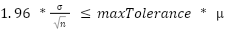
where n is the number of samples so far and is the average illuminance generated by our sampled rays. To calculate and I keep a running sum in my for loop for ray_trace_pixel where I generate rays and find their illuminance. This is done by creating two variables and where each iteration we add the illuminance of
rad = est_radiance_global_illumination(rand_ray)
to our variables, , . We can then use the formulas on the spec to calculate and by doing , . Using these values, whenever our current iteration is a factor of the variable samplesPerBatch, we check whether the pixel satisfies the above inequality and break out of the loop if it's true. We also store the iteration we stopped at to store in the sampleCountBuffer vector.
- Pick two scenes and render them with at least 2048 samples per pixel. Show a good sampling rate image with clearly visible differences in sampling rate over various regions and pixels. Include both your sample rate image, which shows your how your adaptive sampling changes depending on which part of the image you are rendering, and your noise-free rendered result. Use 1 sample per light and at least 5 for max ray depth.
Collaboration
We discussed each part together to make sure we understood it conceptually, but we coded each part individually. We felt like this was the best way for us to learn for this project. Then if we had any problems with our code we discussed the differences in our implementations. Since this project was hard to debug, we felt this was the best approach. Then we both wrote the final report. It went well and we had a lot of fun doing this project. We learned a lot about how graphics are rendered and how we can speed it up. It helped us understand a lot better how ray tracing works and this project was really good at giving us the intuition behind why it works.